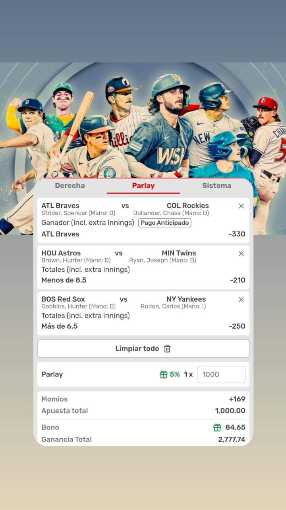

Aquí tienes los pronósticos de hoy:
BRAVOS
🧮 Dominio reciente: En el primer juego de la serie el viernes, Atlanta ganó 12‑4 con jonrones clave de Michael Harris II y Marcell Ozuna, remontando un déficit en casa.
⚾ Pitcher favorito: Hoy sube Spencer Strider, quien aún no ha ganado esta temporada, pero se enfrenta al peor equipo de la liga (Colorado, 13–56), con una batería de estadísticas a su favor.
UNDER ASTROS VS TWINS
🔥 Duelo de pitcheo de élite.
Hunter Brown (Astros) llega con una efectividad asombrosa de 1.82 ERA, 10.6 K/9 y solo 0.7 HR/9. Ha permitido 0 o 1 carrera en 9 de sus últimos 11 inicios.
🧢 Joe Ryan (Twins), con un 7‑2 y 2.96 ERA, también ha sido sólido, especialmente en casa, aunque ha cedido 3+ carreras en tres de sus últimos cuatro salidas, generalmente sin batters poderosos enfrente.
OVER YANKEES VS RED SOX
Alta ofensiva de ambos equipos.
🗽 Los Yankees están promediando 6.5 carreras y 9.2 hits por encuentro en sus últimos cinco partidos. Eso habla de su poderosa capacidad ofensiva reciente.
Boston también ha tenido juegos con mucha puntería: su serie de 11‑7 el domingo y las últimas cinco carreras combinadas en solo dos juegos reflejan un poder considerable.